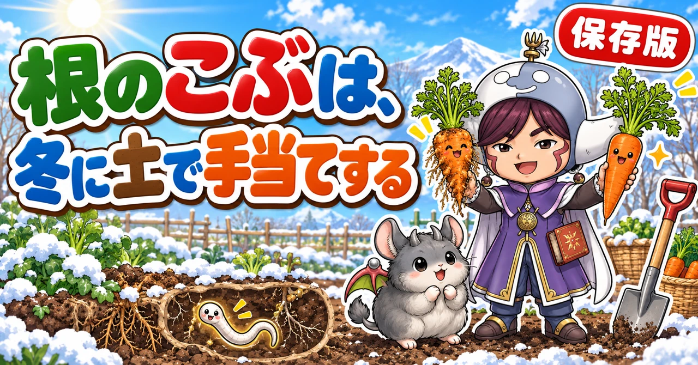
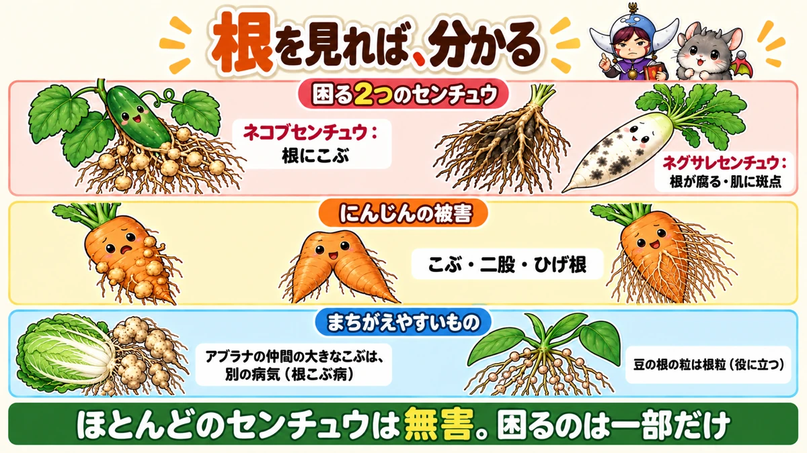
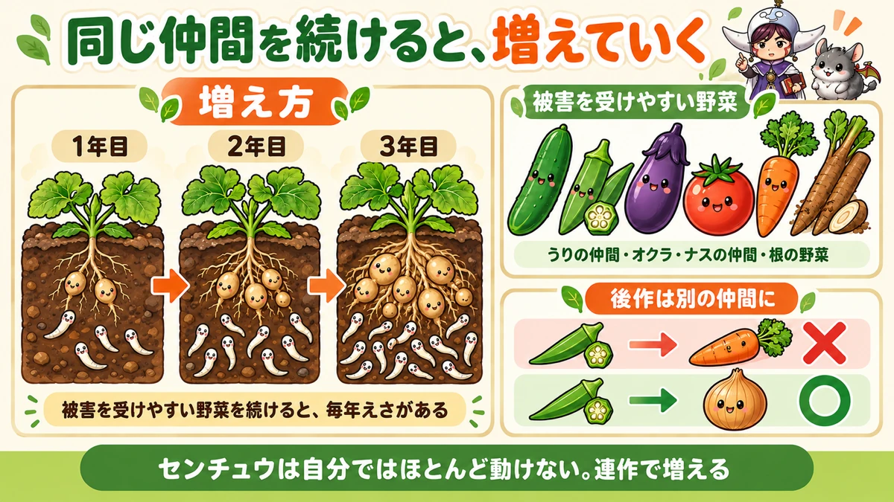
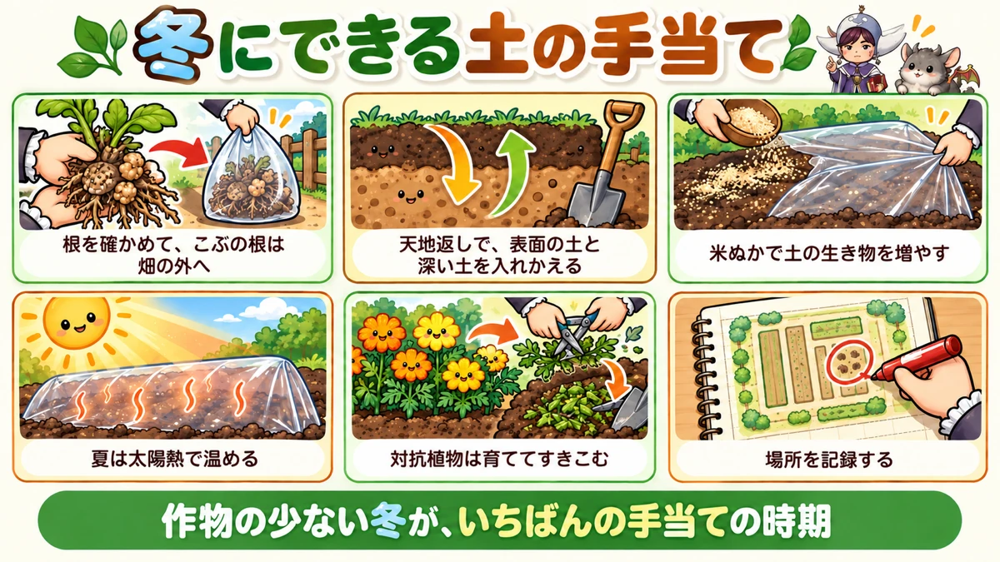

センチュウ対策の決定版｜根のこぶの見分け方、被害を受けやすい野菜、冬にできる土の手当て

📖 この記事の目次
この記事で分かること
- センチュウ（線虫）は、土の中にすむ、目にはほとんど見えないほど小さな、細長い生き物です。ほとんどは無害か、土にとって役に立つものですが、一部の種類が野菜の根に害を与えます。
- 畑でよく困るのは、根にこぶを作る「ネコブセンチュウ」と、根を腐らせる「ネグサレセンチュウ」です。
- ネコブセンチュウにやられると、根にぼこぼこのこぶがたくさんでき、水や養分を吸えなくなって、株の育ちが悪くなります。にんじんや大根は、こぶだらけ、二股、ひげ根だらけになります。
- きゅうり、オクラ、トマト、なす、にんじん、ごぼうなどが被害を受けやすい野菜です。同じ仲間を続けて植えると、土の中で数が増えていきます。
- センチュウは自分ではほとんど動けず、土の水の動きに乗って移動します。だから、ふつうの対策は「増やさない」「減らす」が中心です。
- 薬を使わない対策は、連作を避ける、冬に天地返しをする、米ぬかなどで土の生き物を増やす、夏の太陽熱で温める、マリーゴールドなどの対抗植物を育てる、など。
- 冬は、収穫のあとの根を確かめて、来年の対策を決めるのにいちばんよい時期です。
夏の終わりにきゅうりやオクラを片づけようと抜いたら、根がこぶだらけでぼこぼこになっていた。冬に収穫したにんじんが、こぶだらけでひげ根がもじゃもじゃ。家庭菜園で、よく見かける光景です。
これは、土の中のセンチュウのしわざかもしれません。センチュウは目に見えないので、何が起きているのか分かりにくい相手です。けれども、被害の出方には特徴があり、対策もはっきりしています。しかも、薬を使わない対策がいちばん効くのは、作物の少ない冬の間です。この記事では、センチュウの正体と種類から、被害の見分け方、受けやすい野菜、薬を使わない対策、冬の間にできる土の手当てまで、順番に書いていきます。
早見：センチュウ対策の基本
被害のしるし
- 株の育ちが悪い、昼間しおれやすい、葉の色が悪い
- 抜いた根に、大小のこぶがたくさんついている（ネコブセンチュウ）
- 根が茶色く傷み、細い根が少ない（ネグサレセンチュウ）
- にんじんや大根が、こぶだらけ、二股、ひげ根だらけ、肌に黒っぽい斑点
被害を受けやすい野菜
- きゅうり、メロン、すいか、かぼちゃなどのうりの仲間
- オクラ
- トマト、なすなど
- にんじん、ごぼう、大根などの根の野菜
やること
- 同じ場所に、被害を受けやすい野菜を続けて植えない
- 抜いた根を確かめ、こぶがあれば記録しておく
- 冬に天地返しをして、表面の土と深い土を入れかえる
- 米ぬかなどで、土の中の生き物を増やす
- 夏に太陽熱で土を温める
- マリーゴールドなどの対抗植物を育てて、すきこむ

センチュウという生き物
目に見えないほど小さい
センチュウは、細長いひものような形をした、とても小さな生き物です。多くは長さが1mmにも満たず、肉眼ではほとんど見えません。土の中には、たくさんの種類のセンチュウがすんでいます。
ほとんどは、害のないもの
土の中のセンチュウの多くは、野菜に害を与えません。むしろ、土の中の細菌やかびを食べたり、有機物の分解を助けたりして、土にとって役に立っているものもたくさんいます。
野菜に害を与えるのは、その中の一部の種類です。「センチュウ＝悪い虫」ではなく、「一部の困った種類が増えすぎると、被害が出る」と考えてください。
自分ではほとんど動けない
野菜に害を与えるセンチュウは、自分では遠くへ移動できません。土の中の水の動きに乗って、少しずつ移動します。また、土や苗、道具、靴についた土といっしょに運ばれて、ほかの場所へ広がることがあります。
だから、一度センチュウが増えた場所では、そこに被害を受けやすい野菜を植え続けると、どんどん数が増えていきます。
センチュウの1年（ネコブセンチュウの場合）
1．土の中で、卵や幼虫の姿で冬を越す
2．春から夏、土が温まってくると、卵からかえった幼虫が、近くの根に入りこむ
3．根の中でこぶを作り、そこで栄養を吸いながら育つ
4．こぶの中で、たくさんの卵を産む
5．卵からかえった次の世代が、また根に入りこむ
土の温度が高い時期には、この流れを何回もくり返して、数が増えていきます。夏野菜を育てている間に、土の中で何世代も重ねるので、夏の終わりから秋に、根のこぶが目立ってくるのです。
困るセンチュウの種類
ネコブセンチュウ
根の中に入りこんで、そこで栄養を吸いながら育ち、根に大小のこぶを作ります。こぶができた根は、水や養分を運ぶ管がうまくはたらかなくなり、株全体の育ちが悪くなります。
- 根に、ぼこぼことした丸いこぶがたくさんできる
- こぶは、根と一体になっていて、指でこすっても取れない
- きゅうり、オクラ、トマト、にんじんなどで特に目立つ
ネグサレセンチュウ
根の表面から入りこんで、根の中を移動しながら傷つけ、根を腐らせます。こぶは作りません。
- 根が茶色く傷み、細い根が少なくなる
- 大根やにんじんの肌に、黒っぽい小さな斑点やくぼみができる
- 株の育ちが悪くなる
「根のこぶ」と「根こぶ病」は別のもの
ネコブセンチュウの被害を「根こぶ病」と呼ぶ人もいますが、白菜やキャベツ、かぶなどのアブラナの仲間に出る「根こぶ病」は、センチュウではなく、別の病原（かびの仲間）による病気です。
- ネコブセンチュウのこぶ：小さな丸いこぶが、根のあちこちに数珠のようにたくさんつく。きゅうりやオクラ、にんじんなどに多い
- アブラナの仲間の根こぶ病：根が大きくふくらんで、こぶの形がいびつになる。白菜やキャベツ、かぶなどに出る
原因が違うので、対策も違います。アブラナの仲間の根に大きなこぶがあったら、センチュウとは別の病気を疑ってください。
被害の見分け方
株の様子
センチュウの被害は、地上の様子だけでは、ほかの原因と見分けにくいことがあります。
- 同じ時期に植えたのに、ある場所の株だけ育ちが悪い
- 晴れた日の昼間にしおれやすく、夕方には戻る
- 葉の色が悪く、肥料をやっても回復しない
- 実の数が少なく、実が小さい
こうした様子が、畑の一部にまとまって出るときは、その場所の土にセンチュウが多いことを疑います。
根を見るのがいちばん
いちばん確かなのは、根を見ることです。
- 生育中の株なら、株元から少し離れたところをそっと掘って、根の一部を見る
- 収穫が終わった株は、根ごと掘り上げて、根全体を見る
- 根を水で洗うと、こぶや傷みが見やすくなる
根にぼこぼこのこぶがたくさんついていれば、ネコブセンチュウの可能性が高くなります。
にんじん、大根の場合
根の野菜は、食べる部分そのものに被害が出るので、分かりやすくなります。
- こぶだらけになる
- 二股、三股に分かれる
- ひげ根がもじゃもじゃと多い
- 肌に黒っぽい斑点やくぼみがある
- 太りが悪く、細い
二股のにんじんは、センチュウとは限らない
にんじんや大根が二股になったり、曲がったりする原因は、センチュウだけではありません。
- 土の中の石や、かたい土のかたまりに根の先が当たった
- 肥料のかたまりに根の先が触れて傷んだ
- 土を浅くしか耕しておらず、根がまっすぐ伸びられなかった
センチュウの被害の場合は、根にこぶがある、ひげ根がもじゃもじゃと多い、肌に斑点がある、といった様子をともないます。二股だけで判断せず、根の表面をよく見てください。
被害の進み方
センチュウの被害は、1年目は気づかないくらいでも、同じ場所で同じ仲間の野菜を育て続けるうちに、少しずつひどくなっていくことが多いものです。
- 1年目：一部の株の育ちが少し悪い。根を見ると、小さなこぶが少しある
- 2〜3年目：こぶの出る株が増え、こぶも大きくなる。畑の一部で育ちが目立って悪くなる
- それ以降：植えても育たない、という状態になることもある
早いうちに根を見て気づけば、それだけ手当ても軽くすみます。
被害を受けた野菜は食べられる
センチュウの被害を受けたにんじんや大根も、見た目は悪くなりますが、皮をむいたり、傷んだ部分を取ったりすれば、食べることができます。十分な大きさになっているものは、捨てずに使ってください。

被害を受けやすい野菜
ネコブセンチュウの被害が出やすい野菜
- うりの仲間：きゅうり、メロン、すいか、かぼちゃ、ゴーヤ
- オクラ
- ナスの仲間：トマト、なす、ピーマン
- 根の野菜：にんじん、ごぼう
- そのほか：落花生など
特に、オクラやきゅうりは、根にこぶがつきやすい野菜です。こうした野菜を同じ場所で続けて育てると、土の中のネコブセンチュウがどんどん増えていきます。
ネグサレセンチュウの被害が出やすい野菜
大根、にんじん、ごぼうなどの根の野菜は、ネグサレセンチュウの被害も受けやすく、肌に黒っぽい斑点やくぼみが出て、見た目が悪くなります。いちごやじゃがいもなどでも、根が傷んで育ちが悪くなることがあります。根の野菜の肌に、毎年同じような斑点が出る場所は、ネグサレセンチュウを疑います。
後作で気をつけたい組み合わせ
被害を受けやすい野菜のあとに、同じく被害を受けやすい野菜を植えると、被害が大きくなりやすくなります。
- オクラやきゅうりのあとに、にんじんや大根などの根の野菜
- とうもろこしのあとに、にんじんや大根（とうもろこしのあとはネコブセンチュウが増えていることがある、と言われる）
- にんじんでこぶが出た場所に、また根の野菜
こうした場所には、葉物など、別の仲間の野菜を植えるほうが安心です。
後作に向く野菜
センチュウの被害が出た場所の次の作付けには、比較的被害を受けにくい野菜を選びます。家庭菜園でよくすすめられる組み合わせは、次のようなものです。
- とうもろこしのあと：レタス、白菜、ほうれん草、ブロッコリーなどの葉物や、葉を食べる野菜
- じゃがいものあと：キャベツ、小松菜、ブロッコリーなど
- オクラのあと：玉ねぎなど
一般的には、「根の野菜 → 葉の野菜 → 実の野菜」のように、育てる部分の違う野菜を順番に回していくと、同じ仲間が続かず、センチュウや病気がたまりにくくなります。
夏から秋に活動が盛ん
センチュウは、土の温度が高い時期に活動が盛んになります。真夏の暑すぎる時期より、少し気温が落ちついてきたころに活動が活発になる、とも言われます。夏野菜の終わりごろから秋にかけて、根の被害が目立ってくるのはこのためです。冬は、活動がにぶくなります。
薬を使わない対策
1．連作を避ける
いちばん基本の対策は、被害を受けやすい野菜を、同じ場所に続けて植えないことです。
- こぶが出た場所には、次の年、同じ仲間の野菜を植えない
- 2〜3年は場所を変える（輪作）
- 被害を受けやすい野菜のあとには、葉物など別の仲間を植える
家庭菜園では場所が限られて、輪作がむずかしいこともあります。その場合は、次に書く方法を組み合わせます。
2．冬に天地返しをする
センチュウの多くは、表面から25〜30cmほどの、よく耕している土（作土）にいます。深いところの土には、あまりいません。そこで、表面の土と深いところの土を入れかえる「天地返し」をすると、センチュウの多い土を深いところへ送り、センチュウの少ない土を表面に出すことができます。
1．うねの片側に、表面から25〜30cmほどの土を掘り上げて置きます。
2．さらにその下の深い土を掘り、反対側に置きます。
3．掘った穴に、はじめに掘り上げた表面の土を入れます。
4．その上に、深いところから掘った土をかぶせます。
かんたんにやるなら、スコップで深く掘って、20〜30cm下の土が表面に出るように、ひっくり返していくだけでも効果が期待できます。
天地返しは、作物のない冬の間に行うのが向いています。土が寒さにさらされることで、土の状態もよくなります。ただし、深いところに石が多い畑や、かたい層がある畑では、それを表面に出してしまうことがあるので、土の様子を見ながら行います。
天地返しのこつ
- 作業は、土が乾き気味の日に行う。雨のあとのぬかるんだ土を掘り返すと、土がかたまってしまう
- 一度に畑全体をやろうとせず、こぶの出た場所から、うね1本ずつ進める
- 掘り上げた土を置く場所を、先に決めておく。うねの両側に、表面の土と深い土を分けて置く
- 終わったら、表面を平らにならして、冬の寒さに当てておく
- 春の植えつけの1か月以上前には終わらせ、堆肥や元肥を入れて、土を落ちつかせる
センチュウは水の動きに乗って移動するので、畑に水がたまらないようにしておくことも大切です。水はけの悪い場所は、うね間の溝を掘っておきます。
3．米ぬかなどで土の生き物を増やす
米ぬかや堆肥などの有機物を土に入れると、土の中の微生物や、害のないセンチュウ、ほかの小さな生き物が増えます。生き物の種類が多く、数のつりあいがとれた土では、困ったセンチュウだけが増えすぎることが起こりにくくなる、と言われています。
- 冬に、空いた場所に米ぬかをまいて土と混ぜる
- 堆肥を毎年入れる
- 米ぬかをまいたあとに透明のマルチをかぶせて土を温め、微生物の活動を高める方法もある
化成肥料だけで育てていた場所を、少しずつ有機物を使う育て方に切りかえていくと、土の生き物が豊かになっていきます。
冬の米ぬかと透明マルチ
冬の間に、こぶの出た場所の土を手当てする方法の1つです。
1．収穫のあとの根を片づけ、こぶのついた根は畑の外へ出す
2．1㎡あたりひと握り〜ふた握りの米ぬかをまき、表面の土とよく混ぜる
3．土が乾いていれば、軽く水をかける
4．透明のビニールやマルチを、土にぴったりかぶせて、すそを土で押さえる
5．そのまま冬の間置いておき、春の植えつけの準備のときに外す
透明のマルチで土を少し温めることで、冬の間も微生物の活動が続きやすくなります。
4．夏の太陽熱で土を温める
夏の暑い時期に、土に水をまいてから透明のマルチをぴったりかぶせ、日光で土を温める「太陽熱消毒」をすると、土の浅いところのセンチュウを減らすことができます。夏野菜を片づけたあと、秋冬野菜を植えるまでの間に行います。根にこぶが目立った場合は、少なくとも2週間、できれば1か月ほど温めてから次の野菜を植えます。
太陽熱消毒の手順
1．夏野菜を片づけ、根や草を取り除く
2．土をよく耕し、堆肥や米ぬかを入れる場合はここで混ぜる
3．土にたっぷり水をまき、しっかり湿らせる
4．透明のマルチやビニールを、すき間なくぴったりかぶせ、すそを土で埋める
5．晴れの多い時期に、2週間〜1か月ほどそのままにしておく
6．外したら、深く耕しすぎずに、そのまま次の野菜の準備をする
深く耕すと、温まっていない深い土が表面に出てきてしまうので、太陽熱消毒のあとは浅く整える程度にします。
5．対抗植物を育てる
センチュウを減らすはたらきのある植物を「対抗植物」と呼びます。
- マリーゴールド：アフリカンマリーゴールドやフレンチマリーゴールドに、ネコブセンチュウやネグサレセンチュウを減らす効果があるとされています
- クロタラリア：豆の仲間の緑肥
- エンバク（センチュウに強い品種）：麦の仲間の緑肥
対抗植物は、少し植えただけでは十分な効果が出にくく、夏を含めて2〜3か月以上育て、根を土の中にしっかり張らせることが大切だとされています。育てたあとは、刻んで土にすきこみます。
6．マリーゴールドを生かす
家庭菜園では、花も楽しめるマリーゴールドが取り入れやすい対抗植物です。
- 夏野菜の株の間や、うねの四すみに植える
- はじめのつぼみを摘んで、わき芽を増やし、株を大きく育てる
- 咲き終わった花は摘んで、細かく刻み、土に混ぜる
- 栽培の終わりに、株ごと刻んで土にすきこむ
マリーゴールドを野菜のそばに少し植えるだけでは、効果は限られます。センチュウが多い場所では、その場所にまとめて植えて、しっかり育ててからすきこむほうが効果的です。
マリーゴールドの育て方のこつ
- タネからでも、苗からでも育てられる。真夏はタネが育ちにくいので、苗を買うか、挿し木で増やす
- 草丈10cmほどのころ、先についた最初のつぼみを摘むと、わき芽が増えて、株が大きく育つ
- 咲き終わって枯れはじめた花を摘むと、次の花が次々に咲く
- 挿し木で増やす場合は、花のついていない枝を切り、下の葉を取って、2時間ほど水につけてから、土に挿す
- 霜が降りるころには枯れるので、その前に刻んで土にすきこむ。枯れた株も、刻んで土に埋めれば使える
7．苗と土を持ちこまない
センチュウは、苗の根や土といっしょに運ばれます。
- 苗を買うときは、根の状態も見る。白い根がしっかり張ったものを選ぶ
- ほかの畑で使った土や、こぶの出た場所の土を、別の場所に運ばない
- こぶの出た場所で使った道具や靴は、土を落としてからほかの場所へ行く

ふだんから土の生き物を豊かに
センチュウ対策は、特別な作業だけでなく、ふだんの土づくりの積み重ねでもあります。
- 毎年、堆肥などの有機物を入れる
- 収穫のあとの健康な残さは、堆肥にして土に返す（こぶのついた根は除く）
- 同じ仲間の野菜を続けず、いろいろな野菜を回して育てる
- 空いた時期は、緑肥や対抗植物を育てて、土を裸にしない
土の中の生き物の種類が多く、つりあいのとれた畑は、困ったセンチュウが増えすぎにくい畑でもあります。
収穫のあとと冬にやること
根を必ず確かめる
夏野菜を片づけるとき、冬に根の野菜を収穫するとき、根を確かめるのは、センチュウ対策の第一歩です。
- 抜いた株の根に、こぶがないか見る
- こぶがあった場所を、栽培の記録に書いておく
- 次にその場所に何を植えるかを、ここで決める
根を見ないまま、すぐに次の野菜を植えてしまうと、同じ被害をくり返すことになります。
場所の目印と記録
こぶの出た場所は、冬の間に目印をつけておかないと、春になると分からなくなってしまいます。
- こぶの出た株の位置に、短い棒や札を立てておく
- 畑の簡単な見取り図を描いて、こぶの出た場所に印をつける
- 何の野菜で、どのくらいこぶが出たかを書いておく
- 次の年、その場所に何を植えたか、根はどうだったかを書き足していく
数年分の記録がたまると、畑のどこにセンチュウが多いか、どの組み合わせで被害が出やすいかが見えてきます。
こぶのついた根は畑の外へ
こぶのついた根には、センチュウやその卵がたくさん残っています。抜いた根は、土を落としたうえで、畑の外へ持ち出して処分します。うねの上に置いたり、堆肥の山に入れたりしないようにします。
冬の間の手当て
冬は、センチュウの活動がにぶく、作物も少ない時期です。薬を使わずに対策するなら、この冬の間が絶好の時期です。
1．収穫のあと、根を確かめ、こぶの出た場所に目印をつける
2．こぶのついた根を畑の外へ出す
3．天地返しをする
4．米ぬかや堆肥を入れて、土と混ぜる
5．春に植える野菜を、被害を受けにくいものに決める
季節ごとにやること（一般的な地域の目安）
- 12〜2月：天地返し、米ぬかや堆肥を入れる。来年の作付け計画で、こぶの出た場所の使い方を決める
- 3〜4月：苗を選ぶときに根を見る。こぶの出た場所には、被害を受けにくい野菜を植える
- 5〜6月：マリーゴールドを植える。夏野菜の株の間やうねのすみに
- 7〜8月：夏野菜を片づけたら根を確かめる。こぶがあれば太陽熱消毒
- 9〜11月：秋冬野菜は、こぶの出た場所を避けて植える。マリーゴールドを刻んですきこむ
- 11〜12月：にんじんや大根を収穫したら根の様子を確かめ、記録する
野菜ごとの注意
オクラ
根にこぶがとてもつきやすい野菜です。片づけるときは、スコップで深く掘って根を確かめます。こぶが多かった場所では、次の年、オクラや根の野菜を植えないようにします。
きゅうり、メロン、すいか
うりの仲間は、ネコブセンチュウの被害を受けやすい野菜です。市販の苗の中には、センチュウに強い台木に接いだ苗（接ぎ木苗）もあります。毎年被害が出る場所では、こうした苗を選ぶのも1つの方法です。
接ぎ木苗の選び方
接ぎ木苗は、病気やセンチュウに強い性質の「台木」に、育てたい品種をつないだ苗です。根の部分が台木なので、土の中の害に強くなります。
- 苗のラベルや札に、どんな性質の台木かが書かれていることが多いので、確かめる
- センチュウの被害が毎年出る場所では、センチュウに強いとうたった台木の苗を選ぶ
- 接いだところ（つぎ目）は、土に埋めないように植える。埋めると、上の品種から根が出て、台木の強さが生かせなくなる
接ぎ木苗は、ふつうの苗より値段が高めですが、被害の出やすい場所では、選ぶ価値があります。
トマト、なす
ナスの仲間にも、ネコブセンチュウがつきます。センチュウに強い性質を持つ台木の接ぎ木苗があります。苗のラベルを確かめてみてください。
にんじん、ごぼう、大根
根そのものが被害を受けるので、見た目に大きく影響します。前の作付けでこぶが出た場所や、オクラ、きゅうり、とうもろこしのあとは避けて、タネをまきます。
落花生
落花生も、センチュウの被害を受けることがあります。豆の仲間の連作も避けます。
ごぼう、山いもなど長い根の野菜
ごぼうのように根が長く伸びる野菜は、深いところまで根が届くので、土の中のセンチュウの影響を受けやすくなります。ごぼうを育てる場所は、前の作付けでこぶが出ていないか、特に念入りに確かめます。
いちご
いちごは、植えつけてから翌年の春まで長く同じ場所で育つので、植える前の土の状態が大切です。前の作付けで根にこぶが出た場所は避け、根が白く元気な苗を選びます。
プランターの場合
土を使い回すときに注意
プランターで育てた野菜の根にこぶがあった場合、その土をそのまま使い回すと、次の野菜にも被害が出ることがあります。
- こぶが出た土は、ほかの野菜に使わない
- 使い回す場合は、夏に黒いビニール袋に入れて日なたに置き、熱で温める
- 新しい培養土を足す、または入れかえる
プランターは土の量が少ないので、土を入れかえることで、畑より対策がしやすい面もあります。
説明が分かれるところ
米ぬかは効くか
米ぬかで土の生き物を増やすと、困ったセンチュウが減る、という考え方があります。一方で、米ぬかだけで大きく減らせるかは、はっきりしていません。天地返しや輪作、太陽熱など、ほかの方法と組み合わせるのがよいでしょう。
マリーゴールドは植えるだけでよいか
マリーゴールドを野菜のそばに数株植えるだけでも効果がある、という声がある一方、対抗植物の効果を出すには、まとめて植えて2〜3か月以上育て、すきこむ必要がある、とも言われます。センチュウが多い場所では、しっかり育ててすきこむ方法をとってください。
天地返しは毎年やるか
天地返しは、センチュウの多い表面の土を深くに送る効果がある一方、重労働で、深いところの石やかたい土を表面に出してしまうこともあります。被害がひどい場所だけ、数年に1回など、土の様子を見ながら行うのが現実的です。
よくある失敗
根を見ずに、次の野菜を植えた
被害に気づかず、同じ被害をくり返します。片づけのときに根を確かめます。
こぶのついた根を、畑に捨てた
センチュウや卵が土に残ります。畑の外へ出します。
オクラのあとに、にんじんをまいた
こぶだらけのにんじんになりやすい組み合わせです。後作は、別の仲間の野菜にします。
肥料を足して、元気にしようとした
センチュウで根が傷んでいる株は、肥料を足しても吸えません。根の状態を確かめてから判断します。
こぶの出た場所の土を、別の場所に運んだ
センチュウもいっしょに運ばれて、広げてしまいます。
よくある質問
センチュウに効く薬はありますか
土に混ぜて使う、センチュウ用の市販の薬もあります。使う場合は、ラベルに書かれた野菜の名前、使う時期、量を必ず確かめてください。薬を使わない場合は、この記事の、連作を避ける、天地返し、太陽熱、対抗植物、有機物で土の生き物を増やす、を組み合わせることが中心になります。
新しい土を買ってきて入れかえればいいですか
狭い場所なら、表面の土を新しい土に入れかえる方法もあります。ただ、深いところの土や、まわりの土には、センチュウが残っていることがあります。入れかえたあとも、被害を受けやすい野菜を続けて植えないこと、こぶの出た根を畑に残さないことは、変わらず大切です。
こぶのある根を抜いたあと、すぐ次の野菜を植えてもいいですか
こぶの出た場所に、すぐ同じ仲間の野菜を植えるのは避けます。時期が合えば太陽熱消毒をしてから、冬なら天地返しと米ぬかの手当てをしてから、次の野菜を植えます。急ぐ場合は、被害を受けにくい葉物などを選びます。
1株だけ、根にこぶがありました
1株だけでも、その場所の土にセンチュウがいるしるしです。まわりの株も、片づけるときに根を確かめてください。被害がその株のまわりだけなら、その場所に目印をつけて、次の作付けで被害を受けやすい野菜を避けます。
畑を借りています。前の人の作付けが分かりません
最初の年は、どこにセンチュウが多いかが分かりません。被害を受けやすい野菜を1か所に集めず、いくつかの場所に分けて植えておくと、どこで被害が出やすいかが見えてきます。片づけのときに根を確かめて、場所を記録していけば、2年目からは対策が立てやすくなります。
センチュウは、完全にいなくなりますか
土の中から完全にいなくすることはできません。目標は、被害が出ないくらいまで数を減らし、増えすぎない土にすることです。
白菜の根に大きなこぶがありました。センチュウですか
白菜やキャベツ、かぶなどのアブラナの仲間の根が大きくふくらんでいる場合は、センチュウではなく、根こぶ病という別の病気の可能性があります。原因が違うので、対策も違います。
こぶのある根は、何かの役に立つ根粒ではないのですか
豆の仲間の根には、空気中の窒素を取りこむ菌がすむ「根粒」という小さな粒がつきます。これは株の役に立つもので、センチュウのこぶとは別のものです。根粒は、根の表面に丸くくっついていて、指でつまむと取れることが多いのに対し、センチュウのこぶは根と一体になっていて取れません。豆の仲間の根に粒があっても、あわてて抜かないでください。
冬に収穫したにんじんにこぶがありました。春は何を植えればいいですか
その場所には、春ににんじんやごぼう、うりの仲間などを植えないようにします。葉物など、別の仲間の野菜を植えるか、マリーゴールドなどの対抗植物を育てて、土を休ませるのも1つの方法です。冬の間に天地返しをしておくと、さらに安心です。
学ぶ：センチュウのしくみ🔬
なぜ、根にこぶができるのか
ネコブセンチュウの幼虫は、根の先の近くから根の中に入りこみます。そして、根の中の細胞にはたらきかけて、自分のまわりの細胞を大きくふくらませ、そこから栄養を吸い続けます。センチュウのまわりの細胞が大きくなり、根が部分的にふくらんだものが、こぶです。センチュウは、そのこぶの中で育ち、たくさんの卵を産みます。
こぶのできた根では、水や養分を運ぶ管がゆがんで、うまくはたらかなくなります。株がしおれやすく、育ちが悪くなるのは、このためです。
なぜ、連作で増えるのか
センチュウは、えさになる根がないと、増えることができません。被害を受けやすい野菜を同じ場所に植え続けると、センチュウにとっては、毎年えさが用意されていることになり、世代をくり返して数が増えていきます。反対に、えさにならない野菜を植えたり、対抗植物を育てたりすると、増えることができず、数が減っていきます。輪作が効くのは、このためです。
なぜ、深い土にはセンチュウが少ないのか
野菜の根の多くは、表面から30cmほどの、よく耕されてやわらかい土に広がっています。えさになる根が多い浅い土に、センチュウも集まります。深いところの土は、根が少なく、空気も少ないので、センチュウにとってはすみにくい場所です。天地返しで深い土を表面に出すと、しばらくの間、センチュウの少ない土で野菜を育てられるのは、このためです。
なぜ、生き物の多い土では増えすぎにくいのか
土の中には、センチュウを食べる小さな生き物や、センチュウにとりつくかびなど、センチュウの天敵もすんでいます。有機物の多い土では、こうした生き物も豊かになり、困ったセンチュウだけが増えすぎることを抑えるはたらきが生まれる、と考えられています。土の生き物のつりあいを保つことが、長い目で見たセンチュウ対策になります。
まとめ
ここまで読んでくださって、ありがとうございます！
センチュウ対策のポイントを、もう一度まとめておきます。
- センチュウの多くは無害。困るのは、根にこぶを作るネコブセンチュウと、根を腐らせるネグサレセンチュウ
- 被害のしるしは、育ちが悪い、昼にしおれる、根のこぶ、こぶだらけ・二股のにんじんや大根
- アブラナの仲間の根の大きなこぶは、別の病気（根こぶ病）のことがある
- 被害を受けやすいのは、うりの仲間、オクラ、ナスの仲間、にんじん、ごぼうなど
- センチュウは自分ではほとんど動けない。連作で増え、土や苗といっしょに運ばれる
- 連作を避ける。こぶの出た場所の後作は、別の仲間に
- 冬に天地返しで表面の土と深い土を入れかえる。米ぬかや堆肥で土の生き物を増やす
- 夏は太陽熱で温める。マリーゴールドなどの対抗植物は、まとめて育ててすきこむ
- 片づけのときに根を確かめ、こぶのついた根は畑の外へ。場所を記録する
- 二股のにんじんは、石や肥料のかたまりのこともある。こぶやひげ根、斑点があるかで見分ける
- 被害は年を重ねてひどくなる。早いうちに根を見て気づく
センチュウは目に見えない相手ですが、根を見れば、どこにいるかが分かります。そして、一度増えてしまっても、作付けの順番と冬の手入れを続ければ、少しずつ減らしていくことができます。まずはこの冬、収穫したにんじんや、片づける株の根を、一度よく洗って見てみてください。来年の畑の計画が、ぐっと立てやすくなります🥕
マリーゴールドのタネ
センチュウを減らすはたらきのある対抗植物。まとめて植えて2〜3か月以上育て、刻んで土にすきこみます。
![[商品価格に関しましては、リンクが作成された時点と現時点で情報が変更されている場合がございます。]](https://hbb.afl.rakuten.co.jp/hgb/552615f0.9cc2855e.552615f1.776f7de9/?me_id=1251188&item_id=10001783&pc=https%3A%2F%2Fthumbnail.image.rakuten.co.jp%2F%400_mall%2Fyonezawa%2Fcabinet%2Fhanatane01%2Fhanaharumaki1%2Fhitoezakikongou.jpg%3F_ex%3D240x240&s=240x240&t=picttext "[商品価格に関しましては、リンクが作成された時点と現時点で情報が変更されている場合がございます。]")

透明マルチ
夏の太陽熱消毒や、冬の米ぬかの手当てで、土を温めるのに使います。
![[商品価格に関しましては、リンクが作成された時点と現時点で情報が変更されている場合がございます。]](https://hbb.afl.rakuten.co.jp/hgb/5676ec31.2582035e.5676ec32.c4887243/?me_id=1296241&item_id=10004946&pc=https%3A%2F%2Fthumbnail.image.rakuten.co.jp%2F%400_mall%2Fotentosan%2Fcabinet%2Fimg%2Fgoods02%2Fmulti%2Ftoumei-multi_pb.jpg%3F_ex%3D240x240&s=240x240&t=picttext "[商品価格に関しましては、リンクが作成された時点と現時点で情報が変更されている場合がございます。]")
米ぬか
冬にまいて土と混ぜ、土の中の生き物を増やします。1㎡あたりひと握り〜ふた握りが目安です。
![[商品価格に関しましては、リンクが作成された時点と現時点で情報が変更されている場合がございます。]](https://hbb.afl.rakuten.co.jp/hgb/565b770c.0e767ab7.565b770f.2286fabc/?me_id=1245791&item_id=10001139&pc=https%3A%2F%2Fthumbnail.image.rakuten.co.jp%2F%400_mall%2Figamai-tominaga%2Fcabinet%2Fkome%2Fimgrc0133415879.jpg%3F_ex%3D240x240&s=240x240&t=picttext "[商品価格に関しましては、リンクが作成された時点と現時点で情報が変更されている場合がございます。]")
次に読む
記事一覧へ